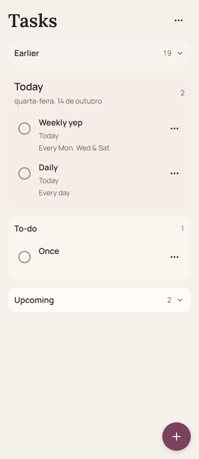
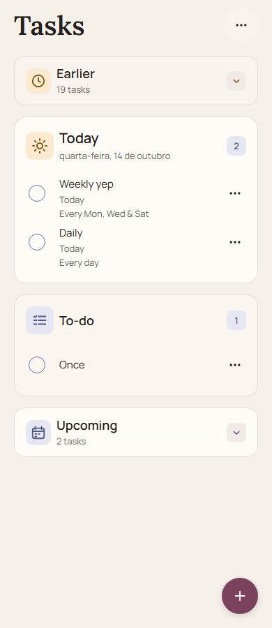

Tasks — Stage 14D.1 visual fidelity review
Actual supplied target → unchanged 14D screen → corrected Tasks main. The two rendered screens use identical source-backed fixtures.
1. Supplied visual target
Use the first uploaded image in the Stage 14D.1 request: the 1536 × 1024 four-panel mockup, specifically its two left Tasks panels.
The actual image is visible in the conversation but is not available as a local image file. This pane documents that exact reference rather than displaying a fabricated reconstruction.
- Warm cream and charcoal surfaces with clear ownership.
- Editorial title; compact rows inside contained regions.
- Warm Today icon; indigo future icon/control vocabulary.
- Soft corners and restrained depth.
Architecture translation: keep vertical Earlier/Today/To-do/Upcoming, header overflow and FAB. Ignore the mockup’s tabs, header Add, progress metrics and completed Today rows.
The second uploaded image is the physical current-state reference: Earlier 19, Today 0, To-do 1, Upcoming 2. Select “Device screenshot state” to compare that data state.
2. Before 14D.1


3. After 14D.1


| Attribute | Before gap | After assessment |
|---|---|---|
| Warmth | Palette present, weak material character | Strong: clean warm Today surface and semantic amber tile |
| Surface hierarchy | Generic boxes with similar header treatment | Strong: primary work region, quieter To-do, compact disclosures |
| Section ownership | Plain labels did most of the work | Strong: icon/header/count composition joins continuous row surfaces |
| Typography personality | Serif title plus uniformly emphasized rows | Strong within the rulebook: Lora title, stronger Manrope headings, quieter regular row titles |
| Spacing | Generic padding and loose row rhythm | Strong: 20px gutters, aligned header/row text, compact metadata |
| Density | 64px minimum one-line rows; three-line rows about 88px | Strong: 56px minimum one-line rows; three-line rows about 70px. Richer module headers use more space. |
| Depth | Flat surface wash | Moderate-to-strong: tonal groups, icon/count insets, soft edge continuity. No rendered lighting effects. |
| Control polish | Generic rings, bare overflow and large FAB | Strong: indigo circular boundaries, round overflow housing, 52px FAB and tactile disclosure states |
| Overall resemblance | Conservative token substitution | Substantially closer in visual character; intentionally different IA, heading face and task information |